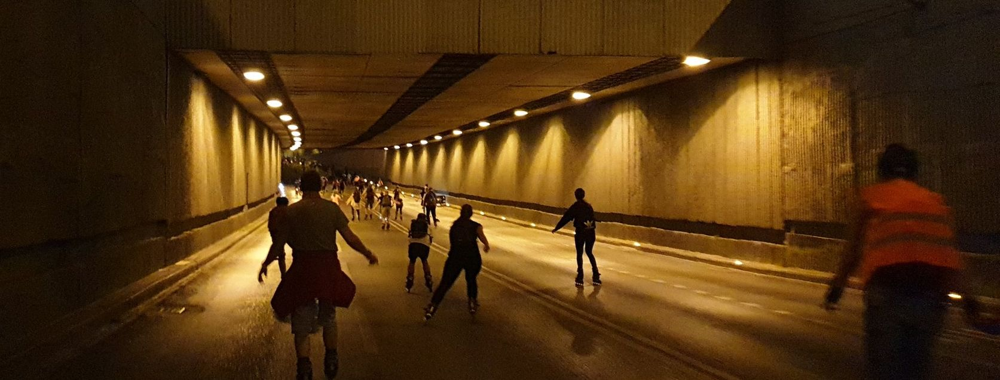

O akcii
Topoľčany-inline je letná korčuliarska akcia, ktorá sa koná vybrané piatky večer počas letných prázdnin. Sú to organizované prejazdy mestom na kolieskových korčuliach (a bicykloch) a akcia je vhodná pre všetkých bez ohľadu na vek.
Čo Topoľčany-inline je
- je letná korčuliarska akcia, konajúca sa pravideľne v slovenkých mestach už od roku 2004
- je korčuľovanie po mestských cestách každý piatok večer počas letných prázdnin
- je 9-10 organizovaných piatkových prejazdov mestom
- je pre mladých, starších, rodiny s deťmi, partie … každého, kto vie korčuľovať
- je zadarmo a bez registrácií
- je za dobrú náladu a radosť zo života ;)
Ako to prebieha
 Foto z Bratislava-Inline. Nočne jazdy maju tiez svoje čaro.Jazdy sa v Topoľčanoch konajú v týchto termínoch: Prvá bude 3.9 a vybrane piatky v septembri.
Akcia sa koná len v prípade dobrého počasia. Pre potvrdenie každej jazdy sledujte vždy v deň akcie okolo obeda shmu.sk a webstránku alebo sa prihláste na odoberanie Newslettera.
Trasy
Jazdíme po cestách, ktoré bežne patria autám s doprovodom štátnej i mestskej polície, zdravotníkov, sanitky a 7-členného inline-teamu. Trasy starostlivo každý rok plánujeme s ohľadom na aktuálny stav ciest, rozkopávky a dopravnú situáciu v spolupráci s Políciou a Magistrátom či Miestnym úradom miest, kde sa akcie konajú. Trasy a miesta štartu sa v Topoľčanoch striedajú. Tento rok pribudnú nové trasy v nových mestských častiach Topoľčian.
Ako sa dostať na akciu/z akcie
Tipy na MHD a parkovanie nájdete pri popise každého podujatia.
Čo Topoľčany-inline nie je
- nie je súťaž
- nie je na ňu potrebná registrácia
- nie je manifestácia za niečo, alebo proti niečomu
- nie je spojená so žiadnym hnutím, politickou stranou alebo inou ideologickou organizáciou
Program Topoľčianskych jázd
- 16.00 stretnutie - na mieste štartu
- 17.00 štart parkovisko ZS. mravenisko
- 17.20 čakame sa a otačame pred Lidl Tovarniky
- 17.40 čakame sa a otačame pred ZS
- 18.00 čakame sa a otačame pred lidl
- 17.40 čakame sa a otačame pred ZS
- 18.00 čakame sa a otačame pred Lidl lidl
- 18.20 navrat pred ZS a koniec akcie
Partneri
Sprievodné vozidlá
Nápojový partner
Mediálni partneri

Partneri a spoluorganizátori


Mestské časti
Newsletter
Chcete dostávať čerstvé informácie o jazdách a novinkách mailom?
Stačí, keď zadáte váš email a potvrdíte odber.